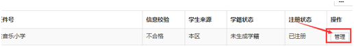

基本信息维护
功能描述
您可以对在籍学生的基本信息、家庭成员信息进行修改。
操作步骤
第一步，进入学生信息管理页面。
如果是新生，进入新生管理->新生列表。
如果是在校生，进入学籍信息管理->学生学籍信息管理。
第二步，选择学生。
第三步，点击“管理”。
第四步，选择你需要修改的信息类型。
- 学生详细信息，在学生详细信息页面，点击“修改学生信息”。
- 家庭成员信息，切换至“家庭成员信息”页面。
- 若要添加新家庭成员，点击“添加家庭成员”。
- 若对现有家庭成员进行更新，可点击“查看”、“修改”或“删除”。
第五步，填写新增的或需要修改的信息内容。带*为必填项。
第六步，点击“保存”提交。